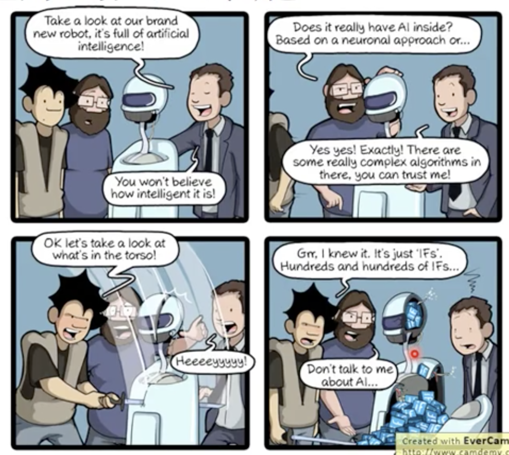
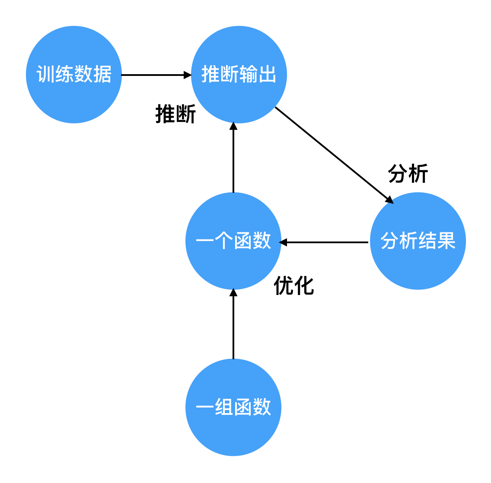

1. 什么是AI?
AI = Artificial Intelligence.
我们人类具有很高的智慧，也希望制造出跟我们一样有智慧的机器。但那些看上去很有智慧的机器都叫AI吗？看下图：

不只是有智慧，智慧怎么来的也很重要，是直接学习人类已知的信息？还是自己分析数据规律学到的呢？如果是前者，那么机器只能学到有限的确定的知识，这种不是真正的AI。
真正的AI需要自己去分析数据，根据数据的不同，学到的规律也不同。这种方法学到的是无限的不确定的知识。这样表现出来的智慧才是AI。而这种分析数据的能力就是Machine Learning。这是ML工程师给它的能力。
2. 机器学习的框架
可以把AI做推断的过程看作是一个function。AI要求机器能够自己分析数据，用于推断的function是由机器通过分析数据之后自动生成的，而不是人工写的充满if的function。
我用计算图的方式画了ML通过数据分析得到function的过程。

图中圆圈代表数据，箭头代表操作。
数据包括：
- 训练数据：提前收集好
- 一组函数：这组函数的集合又称为假设空间，由ML工程师定义，也就是课程中老师说的第一步。
- 一个函数：通过优化算法从一组函数中选择出的一个函数
- 推断输出：选择的某个函数对训练数据作推断得到的输出
- 分析结果：通过分析算法分析这个函数的好坏。
操作包括： - 推断：把训练数据的特征放入函数中推断样本的标签
- 分析：根据推断结果分析这个函数的好坏。分析算法（即损失函数）由ML工程师定义，也就是课程中老师说的第二步。
- 优化：选择一个比当前函数更好的函数。优化算法由ML工程师定义，也就是课程中老师说的第三步。
整体过程为： - 收集足够的训练数据
- 定义假设空间、损失函数、优化算法
- 从假设空间中随机选择一个函数作为第一个函数
- 用函数对训练数据作推断
- 用损失函数分析当前函数
- 用优化算法选择一个当前函数更好的函数
- 重复4-6步，直到选择的函数已经满足预期
3. ML工程师要做什么？
（1）定义假设空间
如果假设空间里的函数太简单，那么即使找到的最好的函数，也很难拟合数据的特性，造成欠拟合。
如果假设空间里的函数太复杂，那么会很倾向于找到完全贴合于训练数据的函数，但这个函数可以连训练数据的噪声也拟合进去了，造成过拟合。
（2）定义损失函数
损失函数决定了函数优化的目标，例如“推断标签与真实标签尽可能接近”、“函数的参数尽可能小”等是常见的目标。
前面一直说要选择一个最好的函数。定义损失函数就是定义了评价一个函数好不好的标准。
也就是把对你期望的模型的样子数字化。
（3） 定义优化算法
从假设空间中选择一个比当前函数更接近目标的函数。
好的优化算法能够更快地找到最好的函数。
不好的优化算法则要经过漫长的迭代才找到目标，甚至有可能根本无法收敛。